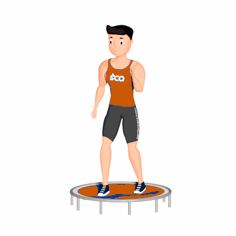

Tesoura no Jump

O exercício trabalha com intensidade a perda de calorias e fortalecimento dos músculos da perna e quadril.
Ficha Técnica
Tipo: Aeróbico
Grupo Muscular: Perna
Aparelho: Nenhum
Músculos: Nenhum
Como realizar
- Suba no Trampolim;
- Posicione os pés paralelos em afastamento médio e as mãos estendidas ao longo do corpo;
- Posicione uma perna na frente e outra atrás e, dando pequenos saltos, troque de lado;
- Repita os movimentos no tempo determinado pelo professor.
 RC STORE
RC STORE